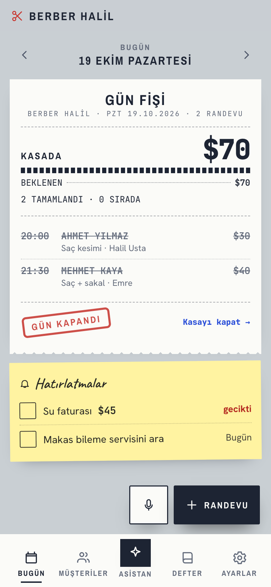
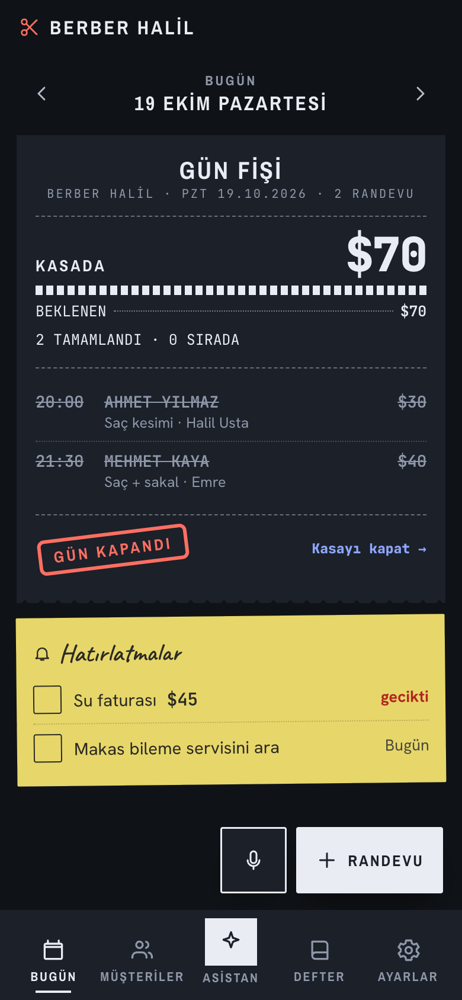
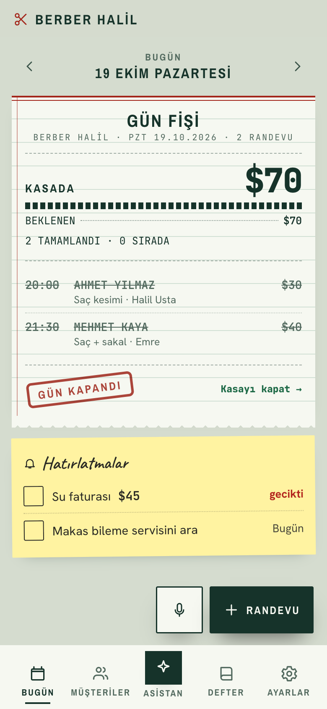
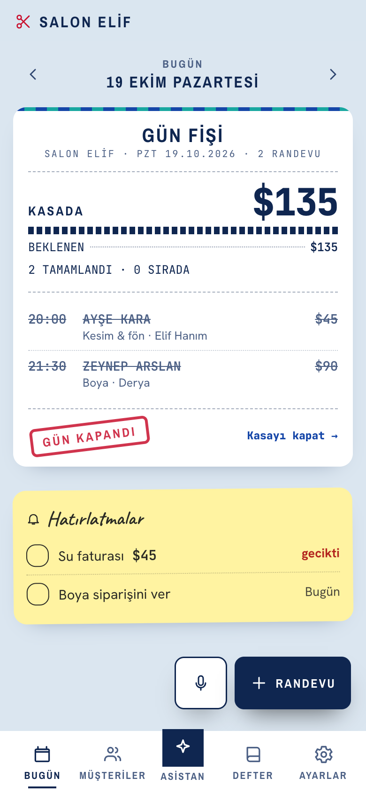
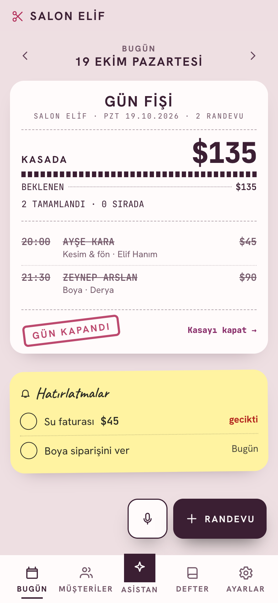
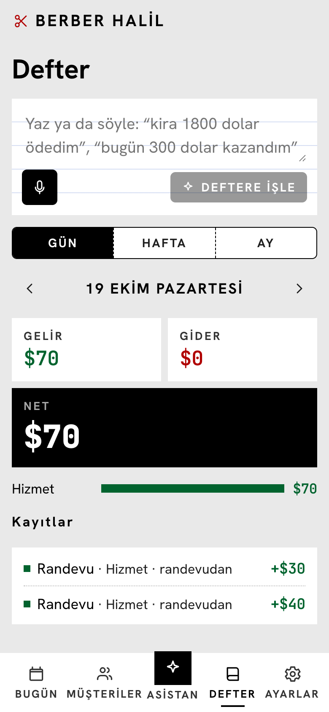

Aynı uygulama, aynı veriler. Görüntülerin hepsi uygulamanın kendisinden alındı; çizim ya da yapay zekâ görseli değil. Esnaf Ayarlar › Görünüm'den tek dokunuşla seçiyor.

AdisyonKasa fişi · varsayılan

KarbonGece · karbon kâğıt

DefterYeşil çizgili kebir defteri

Çiniİznik mavisi · kafe, butik

PudraKuaför ve güzellik salonu

Büyük yazıİri yazı, yüksek kontrast · yaşlı gözler, güneşli vitrin